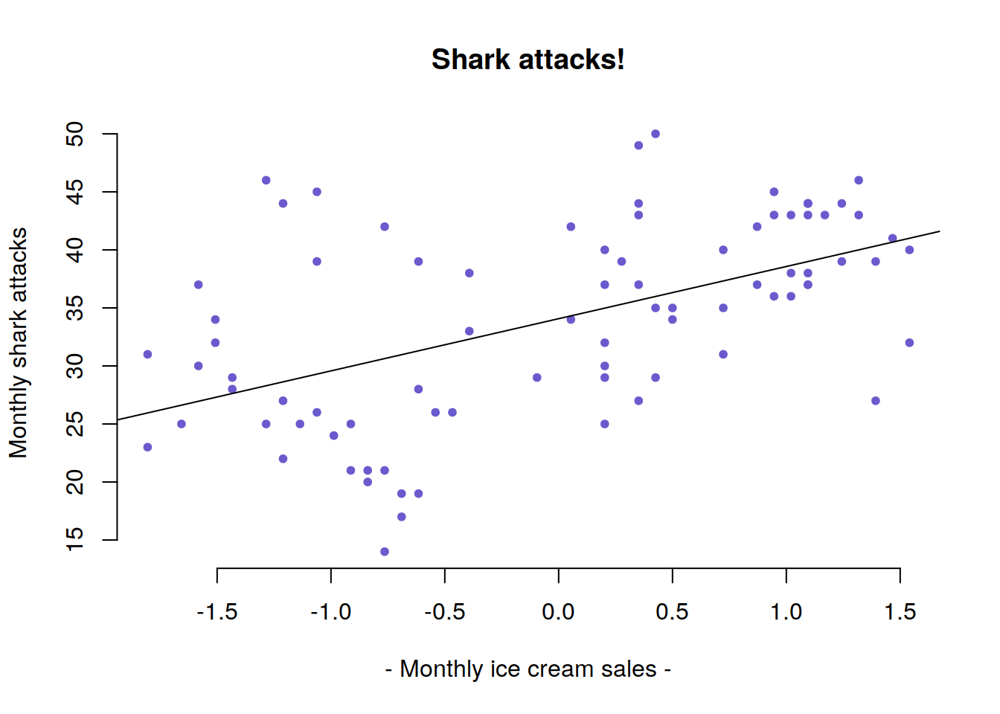
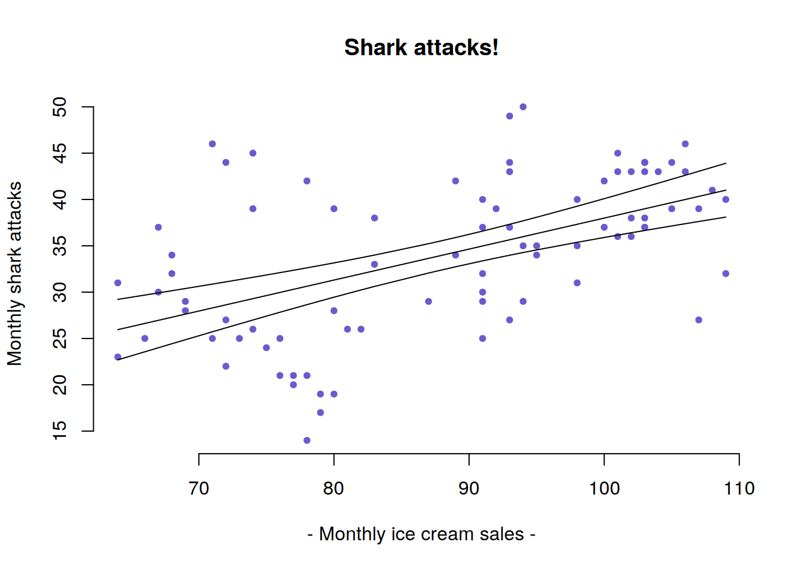
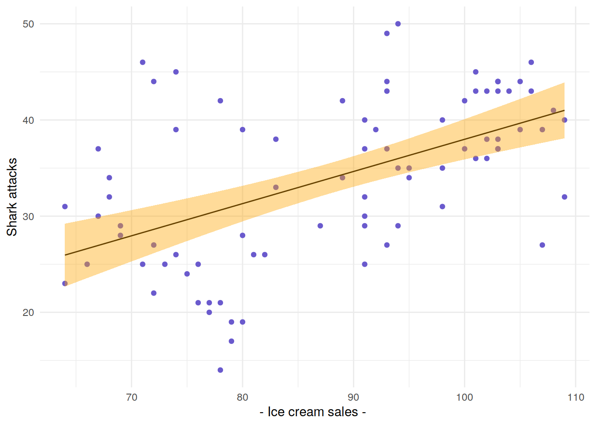
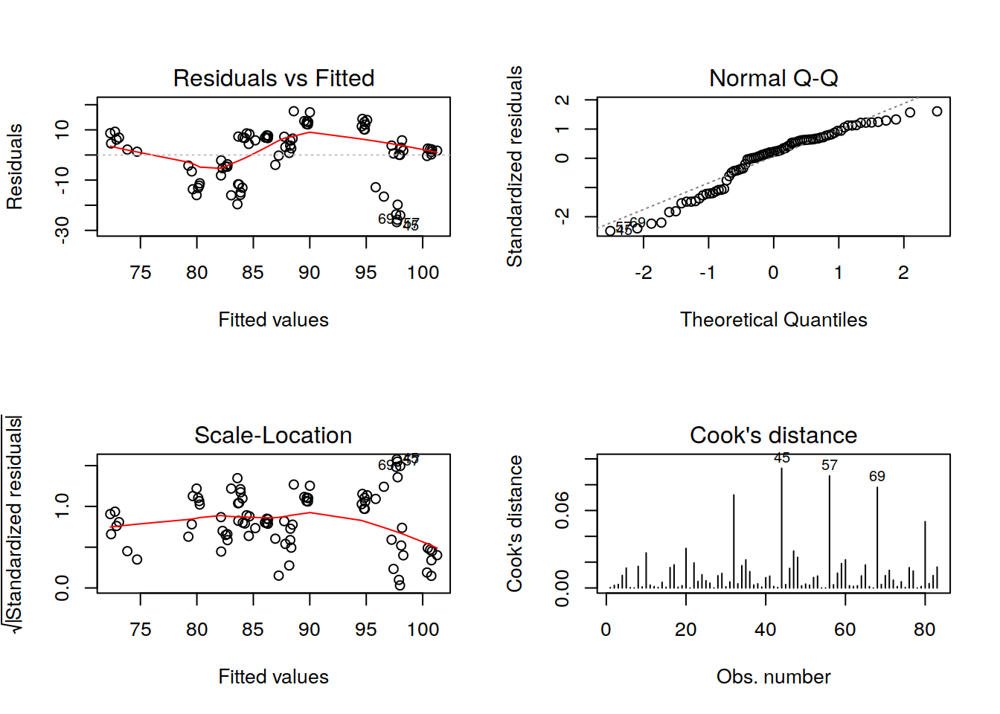

Chapter 8 Lab 8 - The General Linear Model
This week we’ll run a linear model and scale our predictors, learn how to plot the fitted (or predicted) values, and get some practice with model criticism and multiple regression.
8.1 A brief note on with()
You may have noticed a really useful function in the solutions for last couple of weeks - the with() function. This function allows you to specify a data frame that an expression uses. This means you don’t have to keep typing mydataframe$variable. Instead, you can use with(data, function(variable, ....)).
See the following example:
plot(schools$exam, schools$revision_hours)This command can be written as:
with(schools, plot(exam, revision_hours))This can:
* make your code more readable
* save time and effort when you are referring to the same dataframe multiple times.
8.2 Linear Models

sharks1 dataset from LEARN, create a new script file, and load in the data using the load() function. This will load in a dataframe called sharks.
Task: Create a linear model and inspect it by typing the code below.
model <- lm(shark_attacks ~ ice_cream_sales, data = sharks)
summary(model)##
## Call:
## lm(formula = shark_attacks ~ ice_cream_sales, data = sharks)
##
## Residuals:
## Min 1Q Median 3Q Max
## -16.6352 -4.8057 -0.9863 4.8565 17.7059
##
## Coefficients:
## Estimate Std. Error t value Pr(>|t|)
## (Intercept) 4.54859 5.28649 0.860 0.392
## ice_cream_sales 0.33444 0.05921 5.648 2.33e-07 ***
## ---
## Signif. codes: 0 '***' 0.001 '**' 0.01 '*' 0.05 '.' 0.1 ' ' 1
##
## Residual standard error: 7.21 on 81 degrees of freedom
## (1 observation deleted due to missingness)
## Multiple R-squared: 0.2826, Adjusted R-squared: 0.2737
## F-statistic: 31.9 on 1 and 81 DF, p-value: 2.329e-07Task: Create a new model, model2, using scale(ice_cream_sales) instead of ice_cream_sales.
model2 <- lm(shark_attacks ~ scale(ice_cream_sales), data = sharks)
summary(model2)##
## Call:
## lm(formula = shark_attacks ~ scale(ice_cream_sales), data = sharks)
##
## Residuals:
## Min 1Q Median 3Q Max
## -16.6352 -4.8057 -0.9863 4.8565 17.7059
##
## Coefficients:
## Estimate Std. Error t value Pr(>|t|)
## (Intercept) 34.0723 0.7914 43.052 < 2e-16 ***
## scale(ice_cream_sales) 4.4974 0.7962 5.648 2.33e-07 ***
## ---
## Signif. codes: 0 '***' 0.001 '**' 0.01 '*' 0.05 '.' 0.1 ' ' 1
##
## Residual standard error: 7.21 on 81 degrees of freedom
## (1 observation deleted due to missingness)
## Multiple R-squared: 0.2826, Adjusted R-squared: 0.2737
## F-statistic: 31.9 on 1 and 81 DF, p-value: 2.329e-07Task: What does the intercept of model2 tell us? And the slope? (Take a look at the slides from this weeks lecture on standardisation for some guidance with this)
#the intercept is predicted exam score when scale(ice_cream_sales) is 0.
#the scale() function centres a variable around its mean, and standardises it so
#that we can talk in terms of +/-1 standard deviation.
#This means that:
#- the intercept is the predicted shark attacks for the mean number of ice cream sales.
#- the slope now represents the change in shark attacks units for 1 standard deviation increase in ice cream sales.8.3 Model prediction and visualisation
Coefficients can sometimes get a little tricky to interpret, and visualising the model can be really helpful. We’ve seen in an earlier lab one way of visualising a linear model, using theabline() function (Hint: See Week 7 solutions).
Task: Run the code below to create a plot, and then use abline() to add the regression line from the linear model which we named model earlier. The code below also sets the colours and aesthetics of the plots - feel free to try changing these to see how they work!
with(sharks, plot(ice_cream_sales, shark_attacks,
xlab="- Monthly ice cream sales -",ylab="Monthly shark attacks",
main="Shark attacks!",
col=c("slateblue"), bty="n",
pch=20))with(sharks, plot(ice_cream_sales, shark_attacks,
xlab="- Monthly ice cream sales -",ylab="Monthly shark attacks",
main="Shark attacks!",
col=c("slateblue"), bty="n",
pch=20))
abline(model)Task: Do the same for model2. What do you think should be on the x-axis of your plot?
with(sharks, plot(scale(ice_cream_sales), shark_attacks,
xlab="- Monthly ice cream sales -",ylab="Monthly shark attacks",
main="Shark attacks!",
col=c("slateblue"), bty="n",
pch=20))
abline(model2)
8.3.1 Predict()
We can get at the y-values for these lines by using the predict() function.
head(predict(model)) # head() will just print out the first 6 rows## 1 3 4 5 6 7
## 29.96629 34.98294 36.32072 38.99626 40.66848 38.66182predict() function is especially useful as we can ask for model predictions given some new data (e.g., new numbers of monthly ice cream sales).
Task: What do you think the code below tells us?
new_months <- data.frame(ice_cream_sales=c(70, 120))
predict(model, newdata=new_months) ## 1 2
## 27.95963 44.68180# They are the number of shark attacks predicted by our model for months in which 70 and 120 ice creams are sold.Task: We can also ask the predict() function to return a confidence interval. Try the following code:
p.sharks <- predict(model, interval = "confidence")
head(p.sharks)## fit lwr upr
## 1 29.96629 27.82816 32.10442
## 3 34.98294 33.37592 36.58997
## 4 36.32072 34.55807 38.08336
## 5 38.99626 36.65359 41.33894
## 6 40.66848 37.86161 43.47535
## 7 38.66182 36.40498 40.91866There are three columns: fit is the fitted (predicted) value of shark_attacks for each number of ice cream sales; lwr and upper are the upper and lower bounds of the model confidence interval for each value of sharks$ice_cream_sales.
p.sharks, but we had 84 months in our sharks dataset. If you look carefully at the output of summary(model) above, it tells us that 1 observation has been deleted due to “missingness”. The row names of p.sharks are actually the original row names of the sharks dataset (the one which we fit our model on).
Task: Merge the sharks data with p.sharks, and call it sharks_pred. You will need to use by = "row.names".
sharks_pred <- merge(sharks, p.sharks, by="row.names")Task: We can now plot the confidence intervals. You can see this below using the plot() and lines() functions, and with ggplot(). You can also see below how to change some of the aesthetics in ggplot().
Note that to make this work using plot() and lines(), we need to order the dataframe first. Otherwise R will join points to make a line in the order they appear in the data.
If you’re keen to understand this more, try running plot(x=c(5,1,3,4), y=c(1,2,3,4), type="l") to see what happens!
sharks_pred_ordered <- sharks_pred[order(sharks_pred$ice_cream_sales),]
with(sharks, plot(ice_cream_sales, shark_attacks,
xlab="- Monthly ice cream sales -",ylab="Monthly shark attacks",
main="Shark attacks!",
col=c("slateblue"), bty="n",
pch=20))
with(sharks_pred_ordered, lines(ice_cream_sales, fit))
with(sharks_pred_ordered, lines(ice_cream_sales, lwr))
with(sharks_pred_ordered, lines(ice_cream_sales, upr))
library(ggplot2)
ggplot(sharks_pred, aes(x=ice_cream_sales))+
# we want ice_cream_sales on the x-axis
geom_point(aes(y=shark_attacks), col="slateblue")+
# for the points, we want the y to be the actual (observed) shark attacks
geom_line(aes(y=fit))+
# for the line, we want the fitted model values (the "fit" column)
geom_ribbon(aes(ymin=lwr,ymax=upr), fill="orange", alpha=.4) +
# the "ribbon" is the upper and lower bounds of the confidence interval. the alpha bit just makes it slightly transparent.
theme_minimal()+
labs(x="- Ice cream sales - ",y="Shark attacks")
8.4 Model criticism
You’ll also notice that in the sharks data there is information capturing the temperature of each month.
Task: Construct a linear model to see if monthly temperature predicts the number of ice cream sales.
model.b <- lm(ice_cream_sales ~ temperature, data = sharks)
summary(model.b)##
## Call:
## lm(formula = ice_cream_sales ~ temperature, data = sharks)
##
## Residuals:
## Min 1Q Median 3Q Max
## -26.704 -5.914 2.341 7.295 17.415
##
## Coefficients:
## Estimate Std. Error t value Pr(>|t|)
## (Intercept) 51.206 5.720 8.951 9.91e-14 ***
## temperature 1.975 0.298 6.627 3.51e-09 ***
## ---
## Signif. codes: 0 '***' 0.001 '**' 0.01 '*' 0.05 '.' 0.1 ' ' 1
##
## Residual standard error: 10.9 on 81 degrees of freedom
## (1 observation deleted due to missingness)
## Multiple R-squared: 0.3516, Adjusted R-squared: 0.3436
## F-statistic: 43.92 on 1 and 81 DF, p-value: 3.505e-09Task: Plot the regression line and confidence interval, as seen above.
icecream_pred <- merge(sharks, predict(model.b, interval = "confidence"), by="row.names")
ggplot(icecream_pred, aes(x=temperature))+
geom_point(aes(y=ice_cream_sales, col=temperature))+
geom_line(aes(y=fit))+
geom_ribbon(aes(ymin=lwr,ymax=upr), fill="red", alpha=.4)+
theme_minimal()+
labs(x="- Temperature -", y="Ice cream sales")plot() on your model.Here are some quick explanations of the plots you get out:
Residuals vs Fitted: Can show if the residuals have non-linear patterns. A “good” model will show equally spread residuals around a horizontal line.
Normal Q-Q: This is a way of plotting the residuals against the equivalent quantiles of a standard normal distribution (mean = 0, sd = 1). A “good” model will have residuals close to the straight dashed line.
Scale-Location: (also called Spread-Location). This shows if the residuals are spread equally along the range of the predictors (This is the assumption of equal variance, or homoscedaticity). Ideally, we want a horizontal line with points spread equally from across the plot.
- Residuals vs Leverage: This helps to find influential points in the regression. Cook’s Distance is shown on these plots by red dashed lines, and points which fall outside of these lines are influential to the model. A really good illustration of influence can be found here.
# Model Check (Visually):
par(mfrow = c(2, 2))
plot(model.b, which = c(1:4))
# There might be some issues:
# There may be a slight non-linear pattern to the data.
# QQ-Plot shows a small deviation at the lower end.
# Homogeneity of Variance also potentially problematic
# A couple of quite influential points8.5 Multiple regression
Think about the relationship we found earlier between ice cream sales and shark attacks. Does this make sense to you? (see also the Spurious Correlations page). What might explain the relationship?
Task: Does the number of ice cream sales predict shark attaacks over and above what temperature predicts?
Tip: You’ll want to test whether adding a new predictor improves on chance (using anova()) as part of your answer… Part 2 of Lecture 7 will help you here.
model.c <- lm(shark_attacks ~ temperature + ice_cream_sales, data = sharks)
anova(model.c)## Analysis of Variance Table
##
## Response: shark_attacks
## Df Sum Sq Mean Sq F value Pr(>F)
## temperature 1 3000.00 3000.00 86.8115 2.093e-14 ***
## ice_cream_sales 1 104.96 104.96 3.0374 0.08521 .
## Residuals 80 2764.61 34.56
## ---
## Signif. codes: 0 '***' 0.001 '**' 0.01 '*' 0.05 '.' 0.1 ' ' 1summary(model.c)##
## Call:
## lm(formula = shark_attacks ~ temperature + ice_cream_sales, data = sharks)
##
## Residuals:
## Min 1Q Median 3Q Max
## -15.2533 -2.6712 -0.0836 2.9513 16.6902
##
## Coefficients:
## Estimate Std. Error t value Pr(>|t|)
## (Intercept) 0.60047 4.35313 0.138 0.8906
## temperature 1.29170 0.19966 6.469 7.27e-09 ***
## ice_cream_sales 0.10448 0.05995 1.743 0.0852 .
## ---
## Signif. codes: 0 '***' 0.001 '**' 0.01 '*' 0.05 '.' 0.1 ' ' 1
##
## Residual standard error: 5.879 on 80 degrees of freedom
## (1 observation deleted due to missingness)
## Multiple R-squared: 0.529, Adjusted R-squared: 0.5172
## F-statistic: 44.92 on 2 and 80 DF, p-value: 8.339e-14Task: Think about what we know about our predictors (ice_cream_sales and temperature) - they are correlated. This will make the standard error of the coefficient bigger (you can see the standard errors in the SE column in the summary() output for a model). Use the vif() function from the car package to see how much the SE of the effect of ice_cream_sales on shark_attacks has been inflated by the inclusion of temperature. Is it problematic?
Hint: See slide 36 of Lecture 7.
library(car)
vif(model.c)## temperature ice_cream_sales
## 1.542181 1.542181#VIFs of less than 4 are usually not too bad, so we're okay here.
#square root of VIF tells you inflation of SE.
sqrt(1.542181)## [1] 1.2418468.6 Contrast coding
Task: The data we’ve been working with has captured great white shark attacks. But what about other types of shark? Load in the sharks_extra data set from learn. It will load in a dataset called sharks2. It contains data for hammerheads and basking shark attacks as well as the attacks by the great whites.
Task: Use orthogonal contrasts to answer the following questions:
- Do basking sharks attack fewer people than great whites and hammerheads?
- Do numbers of great whites attacks differ from hammerhead attacks?
load("data/sharks_extra.Rdata")
contrasts(sharks2$shark)## basking hammerhead
## great_white 0 0
## basking 1 0
## hammerhead 0 1contrasts(sharks2$shark)<-cbind("GWHvB"=c(-1/3, 2/3, -1/3),
"GWvH"=c(1/2, 0, -1/2))
shark_model<-lm(shark_attacks ~ shark, data = sharks2)
summary(shark_model)##
## Call:
## lm(formula = shark_attacks ~ shark, data = sharks2)
##
## Residuals:
## Min 1Q Median 3Q Max
## -20.5357 -7.2738 -0.2738 7.4643 18.4643
##
## Coefficients:
## Estimate Std. Error t value Pr(>|t|)
## (Intercept) 25.9365 0.5639 45.994 <2e-16 ***
## sharkGWHvB -24.9940 1.1962 -20.894 <2e-16 ***
## sharkGWvH -0.5357 1.3813 -0.388 0.698
## ---
## Signif. codes: 0 '***' 0.001 '**' 0.01 '*' 0.05 '.' 0.1 ' ' 1
##
## Residual standard error: 8.952 on 249 degrees of freedom
## Multiple R-squared: 0.6369, Adjusted R-squared: 0.634
## F-statistic: 218.4 on 2 and 249 DF, p-value: < 2.2e-16